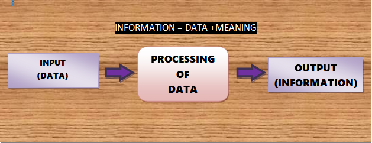

Data is a collection of raw, unorganised facts and details like text, observations, figures, symbols and description of things etc. In other words, data does not carry any specific purpose and has no significance by itself. Moreover, data is measured in terms of bits and bytes which are basic units of information in the context of computer storage and processing.
Information is the processed, organised and structured data. It provides context for data and enables decision making.Information is perceivable, interpreted as a message in a particular manner, which provides meaning to data.Information is what you get after processing data. Data and facts can be analysed or used as an effort to gain knowledge and infer on a conclusion. In other words, accurate, systematize, understandable, relevant, and timely data is Information. For example, a single customers sale at a restaurant is data this becomes information when the business is able to identify the most popular or least popular dish.

The abstract datatype is special kind of datatype, whose behavior is defined by a set of values and set of operations. The keyword "Abstract" is used as we can use these datatypes, we can perform different operations. But how those operations are working that is totally hidden from the user. The ADT is made of with primitive datatypes, but operation logics are hidden.
Data Structure is an approach of organizing data, storing data and managing data so that we can access and modify it efficiently.data structure concept is needed to handle the operations on that large amount of data. Means we have to use array or linked list as per requirement to manage that much data and perform any desired operation on it efficiently.In simple word, we can define data structures as it is a structure programmed to store data in ordered form so that operations are often performed on that very easily. Also, represent the data in organized form to store in a memory so that it should be increase the efficiency and reduces the complexity.